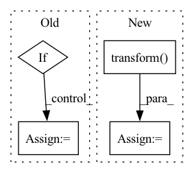

Pattern ID :20573
Before Change
f"Unsupported variable_dim_index={variable_dim_index}"
)
if variable_dim_index == 1:
b = np.zeros((len(indices), output.dim))
b[np.arange(len(indices)), indices] = 1
elif variable_dim_index == 2:
b = np.zeros((indices.shape[0], indices.shape[1], output.dim))
// From https://stackoverflow.com/questions/36960320/convert-a-2d-matrix-to-a-3d-one-hot-matrix-numpy
def all_idx(idx, axis):
grid = np.ogrid[tuple(map(slice, idx.shape))]After Change
f"Unsupported variable_dim_index={variable_dim_index}"
)
feature_scaled = output.transform( raw.flatten()) .reshape(raw.shape)
if output.apply_example_scaling:
if variable_dim_index != 2:In pattern: SUPERPATTERN
Frequency: 5
Non-data size: 4
Instances Fragment ID: 66379956
Project Name: gretelai/gretel-synthetics
Commit Name: cf7dd31ca60b565bb50fdf0b30092e2c9ebb25bf
Time: 2022-11-21
Author: kendrick@gretel.ai
File Name: src/gretel_synthetics/timeseries_dgan/transformations.py
M Class Name: AnonimousClass
N Class Name: AnonimousClass
M Method Name: transform(4)
N Method Name: transform(4)
M Parent Class:
N Parent Class:
M File Name: src/gretel_synthetics/timeseries_dgan/transformations.py
N File Name: src/gretel_synthetics/timeseries_dgan/transformations.py
M Start Line: 244
M End Line: 293
N Start Line: 588
N End Line: 623
Before Change
mid = i + 1
end = i + 1 + self.horizon
X = self.X[start:mid]
if self.y is not None:
y = self.y[mid:end]
bias = self.y[start:mid]
else:
y = self.X[mid:end]
bias = self.X[start:mid]
if self.time_stamps is not None:
time_stamps: Optional[Tensor] = self.time_stamps[start:end]
else:After Change
time_stamps: Optional[Tensor] = self.time_stamps[start:end]
else:
time_stamps = None
X = self.X_scaler.transform( X)
y = self.y_scaler.transform(y)
bias = self.y_scaler.transform(bias)
return (
X, Fragment ID: 66379952
Project Name: takuyashintate/tsts
Commit Name: e952ef63302c29b32c95e17f46dfcaabd2ad1b85
Time: 2021-09-14
Author: kmdbn2hs@gmail.com
File Name: tsts/datasets/dataset.py
M Class Name: Dataset
N Class Name: Dataset
M Method Name: __getitem__(2)
N Method Name: __getitem__(2)
M Parent Class: _Dataset
N Parent Class: _Dataset
M File Name: tsts/datasets/dataset.py
N File Name: tsts/datasets/dataset.py
M Start Line: 79
M End Line: 93
N Start Line: 104
N End Line: 121
Before Change
img_HR = self.transform(img_HR)
if not self.need_LR:
img_LR = img_HR
if not self.need_HR:
img_HR = img_LR
return {"LR": img_LR, "HR": img_HR, "Index": index}
After Change
self.l_res, self.r_res, str(index).zfill(5)).encode("utf-8")
)
img_SR = Image.open(BytesIO(sr_img_bytes))
img_SR = self.transform( img_SR)
if self.need_LR:
return {"LR": img_LR, "HR": img_HR, "SR": img_SR, "Index": index}
else:
return {"HR": img_HR, "SR": img_SR, "Index": index} Fragment ID: 66379953
Project Name: janspiry/image-super-resolution-via-iterative-refinement
Commit Name: 8cdec2d2a716f6a62b307fa0834d89403ebd31ba
Time: 2021-08-02
Author: lw_jiang@foxmail.com
File Name: data/LRHR_dataset.py
M Class Name: LRHRDataset
N Class Name: LRHRDataset
M Method Name: __getitem__(2)
N Method Name: __getitem__(2)
M Parent Class: Dataset
N Parent Class: Dataset
M File Name: data/LRHR_dataset.py
N File Name: data/LRHR_dataset.py
M Start Line: 41
M End Line: 62
N Start Line: 40
N End Line: 67
Before Change
cat_names = ("name-string", "id")
num_buckets = 10
if use_dict:
hashed_cross_op = ops.HashedCross({cat_names: num_buckets})
else:
hashed_cross_op = ops.HashedCross([cat_names], [num_buckets])
After Change
assert np.all(new_gdf[new_column_name].values >= 0)
assert np.all(new_gdf[new_column_name].values <= 9)
checksum = new_gdf[new_column_name].sum()
new_gdf = processor.transform( dataset) .to_ddf().compute()
assert new_gdf[new_column_name].sum() == checksum
Fragment ID: 66379949
Project Name: nvidia/nvtabular
Commit Name: 4c92dffac4354d816178264bcfcdec722db2ec1c
Time: 2021-01-05
Author: github@benfrederickson.com
File Name: tests/unit/test_ops.py
M Class Name: AnonimousClass
N Class Name: AnonimousClass
M Method Name: test_hashed_cross(5)
N Method Name: test_hashed_cross(6)
M Parent Class:
N Parent Class:
M File Name: tests/unit/test_ops.py
N File Name: tests/unit/test_ops.py
M Start Line: 1058
M End Line: 1085
N Start Line: 659
N End Line: 674
Before Change
img_HR = self.transform(img_HR)
if not self.need_LR:
img_LR = img_HR
if not self.need_HR:
img_HR = img_LR
return {"LR": img_LR, "HR": img_HR, "Index": index}
After Change
self.l_res, self.r_res, str(index).zfill(5)).encode("utf-8")
)
img_SR = Image.open(BytesIO(sr_img_bytes))
img_SR = self.transform( img_SR)
if self.need_LR:
return {"LR": img_LR, "HR": img_HR, "SR": img_SR, "Index": index}
else:
return {"HR": img_HR, "SR": img_SR, "Index": index} Fragment ID: 66379961
Project Name: janspiry/image-super-resolution-via-iterative-refinement
Commit Name: ab7fd724c37c270e9bad32892034fed18790eb59
Time: 2021-08-02
Author: jiangliangwei@tetras.com
File Name: data/LRHR_dataset.py
M Class Name: LRHRDataset
N Class Name: LRHRDataset
M Method Name: __getitem__(2)
N Method Name: __getitem__(2)
M Parent Class: Dataset
N Parent Class: Dataset
M File Name: data/LRHR_dataset.py
N File Name: data/LRHR_dataset.py
M Start Line: 41
M End Line: 62
N Start Line: 40
N End Line: 67